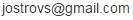

Tämä sivu on laadittu lentopallon tuomarinimeäjien avuksi.
Tällä sivulla näkyvät vain aikuisten sarjojen pelit. Juniorien ja mastersien pelit ovat omilla sivuillaan:
Juniorit: http://www.lentopalloerotuomarit.fi/nimeajat/juniors.html
Masters: http://www.lentopalloerotuomarit.fi/nimeajat/masters.html
Tuplabuukkaukset Näyttää sellaiset tapaukset, joissa tuomarille on nimetty kaksi peliä samalle päivälle. Huom: juniorien ja mastersien pelit on oletusarvoisesti suodatettu pois, eivätkä näy tässä.
Nimeämättömät ottelut Näyttää ottelut, joista puuttuu tuomari, ja sen, mikä tehtävä on täyttämättä.
Tehtävämäärät Näyttää tuomarikohtaisesti kuukausittaiset ottelut sarjoittain. Tämä on tarkoitettu avuksi juuri nimettyjen tehtävien määrän tarkistamiseen, eli käytettäväksi silloin kun mietitään, kenelle nimeäisin jonkun ottelun; onko jollakulla liian pieni tai liian suuri työmäärä.
Lähipelit Näyttää aikajärjestyksessä listan kaikkien valittujen sarjojen otteluista siihen päivään saakka, joka on valittu näytettäväksi nimeämättömien pelien kohdalla.
Omien tuomareiden valinta
Ensimmäinen toimenpide, joka työkalua käytettäessä pitäisi suorittaa, on tuomareiden valinta. Asetukset-välilehdellä on pitkä lista tuomareista. Kunkin rivin ensimmäisenä on ruksitettava laatikko, josta voi valita tuomarin ns. omaksi tuomariksi. Useimpia nimeäjiä kiinnostaa vain joidenkin tiettyjen tuomareiden ottelut ja tehtävät, ja tältä listalta pitäisi valita heidät. Kun oma lista tuomareista on saatu naksuteltua, voi ruksata kohdan "Näytä vain valitut tuomarit", jolloin muut eivät edes näy listalla. Listan yläpuolella oleva rivi valintalaatikkoja suodattaa tuomareita näkyviin tuomariluokan mukaan. Listan voi järjestää sarakkeiden otsikoita napauttamalla. Postinumeron mukaan järjestäminen lienee tehokkaimpia tapoja.
Kun halutut tuomarit on valittu, niin viimeistään silloin kannattaa ensimmäisen kerran tallettaa asetukset ao. painikkeesta. Asetukset talletetaan selaimen local storageen, eli ne täytyy tehdä erikseen jokaisella tietokoneella ja puhelimella ja tabletilla, jokaisella selaimella, jota käytät.
Torneopal tarjoaa tällä hetkellä tuomareiden tiedoista ainoastaan nimen ja Id-numeron, ja kaikki muut tiedot on täytetty tulospalvelun tuomarilistauksen perusteella, listaus on siis luettu kerran ja tiedot talletettu silloin. Kaikkien tuomareiden tietoja ei tulospalvelunkaan listalta ole löytynyt, ja tällaisten tuomareiden tuomariluokaksi on merkitty "Ei". Tästä samasta syystä heidän kohdaltaan ei löydy täältäkään muita tietoja kuin nimi ja se Id. Nämä tuomarit ovat oletettavasti pääosin sellaisia, joilla ei ole voimassaolevaa lisenssiä, mutta jos noissa tiedoissa ilmenee päivitystarvetta, niin minulle voi ilmoitella.
Tehtävämäärät-listalla näkyvien tuomareiden valinta
Tuomarilistassa on myös valintalaatikko sarakkeessa "Määrät". Tällä valinnalla valitaan omien tuomareiden joukosta ne, jotka halutaan listata Tehtävämäärät-sivulla. Nimeäjä voi esim. nimetä vain liiton sarjojen pelejä ja häntä kiinnostaa siksi juuri niitä pelejä viheltävien tuomareiden tehtävämäärät, mutta hän haluaa silti saada varoituksen siitä, että jollain lähituomarilla on tuplabuukkaus.
Valitut sarjat
Seuraavaksi valitaan ne sarjat, joiden otteluita halutaan tarkastella. (Tuomarilistan saa pienennettyä "Tuomarit: valittu..." -otsaketta napauttamalla). Oletusarvoisesti on valittu kaikki liiton aikuisten sarjat, mutta ruksaamalla jonkun alueista, saa näkyviin kaikki sen alaiset sarjat, lohkot ja joukkueet. Näkyviin tai pois voi valita kerralla kokonaisen alueen, sarjan tai lohkon, ja näiden sisältä voi vielä valita, jos haluaa nähdä vain joidenkin tiettyjen joukkueiden kotiottelut.
Kun halutut sarjat on valittu, niin talletetaan jälleen asetukset, ja sivusto onkin käyttökunnossa.
Taulukossa kuukauden nimeä kilkkaamalla voi piilottaa/palauttaa ko. kuukauden tehtävät. Valinnat tallettuvat ko-sivun talletuspainikkeella.
Tuplabuukkaukset
Tämä välilehti luettelee kaikki tapaukset, joissa jollain tuomarilla on samana päivänä kaksi ottelua, ja linkit ko. tuomarin ottelulistaan ja noiden ottelujen tietoihin.
Huom! Täällä näkyvät vain asetuksissa omiksi valittujen tuomareiden tuplabuukkaukset. Juniorien pelit on myös suodatettu oletusarvoisesti pois, joten nekään eivät täällä näy. Tarkoitus on, että jos tällä välilehdellä jotain näkyy, niin se täytyy aina tapauskohtaisesti tarkistaa.
Nimeämättömät ottelut
Tämä välilehti luettelee kaikki ottelut asetusten määräämään päivämäärään saakka, joista puuttuu joku tuomareista. Liiga- ja 1-sarjapeleissä se tarkoittaa PT, VT ja rajatuomarit, M2- ja M3- sarjoissa PT ja VT ja muissa sarjoissa PT.
Huom! Täällä näkyvät vain niiden sarjojen ja joukkueiden kotiottelut, jotka on valittu näytettäviksi.
Tehtävämäärät
Tämä välilehti on vain informatiivisuuden vuoksi, eikä varoita mistään. Näytettävät sarjat täytetään valittujen tuomareiden mukaisesti, ja valintaruuduissa tehtävät suodatukset voi tallettaa.
Lähipelit
Myös tämä välilehti on vain informatiivisuuden vuoksi, eikä varoita mistään. Tämän kautta saa katsauksen valittujen sarjojan lähiaikoina tulevista / menneistä peleistä.
Palautetta ja kehitystä
Sivujen toiminnasta voi antaa palautetta minulle, joko suoraan sähköpostilla tai aluekouluttajien foorumilla olevaan viestiketjuun http://lentopalloerotuomarit.fi/foorumi/viewtopic.php?f=19&t=257 . Alkuvaiheessa olisi erityisen tärkeää kertoa kaikista tilanteista, joissa näytetyt tiedot ovat jollain tapaa vääriä. Asetusten toimintalogiikka on tehty siten, että siinä valitaan aina niitä tuomareita ja sarjoja jne, joita ei näytetä. Tällöin tapauksessa, jossa järjestelmään tulee uusia otteluita, lohkoja tuomareita jne, tulevat uudet aina näkyviin, kunnes ne erikseen käydään asetuksista piilottamassa. Ensimmäisellä avauskerralla olen valinnut näkyviksi liiton sarjojen aikuisten pelit ja neljä liigatuomaria.
Sivusto on vielä kehitysvaiheessa, joten vikoja saattaa hyvinkin ilmetä. Kehitän sivuja edelleen aktiivisesti. Parannusehdotuksia saa kernaasti esittää. Tässä muodossaan sivu palvelee niitä tarpeita joita minulla nimeäjänä on, mutta se ei välttämättä sovi kaikille. Osa sarjoista on pysyvästi suodatettu pois näkyvistä, joten jos et saa jotain itsellesi tärkeää sarjaa lainkaan näkyviin, saattaa syy olla siinä. Kerro asiasta, niin asia saadaan helposti korjattua.
Sellainen välilehti on jossain vaiheessa ainakin tulossa, joka kertoo väärille tuomareille nimetyistä otteluista. Joskus ottelu voi lipsahtaa viereiselle nimelle, ja listalla voisi esittää tapaukset, joissa valittujen sarjojen ottelu on nimetty tuomarille, joka ei löydy valittujen joujosta.
Huom! Kehitysvaiheessa sivu toimii Chromella ja Firefoxilla, joten jos sivu ei tunnu toimivan lainkaan, niin kokeile ensin ajantasaisella selaimella.
-Jori

Kun asetukset on saatu kuntoon yhdellä selaimella esim. PC:llä, olisi mukavaa saada samat asetukset siirrettyä muille laitteille ilman työlästä uudelleennaksuttelua. Se onnistuu täällä.
HUOM! Käytä vie-toimintoa vain heti sen jälkeen, kun olet tallettanut ja ladannut asetukset "Asetukset"-välilehdellä! Näin varmistetaan se, että siirrettäviin asetuksiin ole tullut muutoksia.
1. Lataa sivu uudestaan.
2. Tule selaimella tälle sivulle ja kopioi KAIKKI teksti ylemmästä alla olevasta laatikosta.
3. Siirrä jollain konstilla teksti PC:ltä puhelimeen.
4. Liitä puhelimessa teksti alempaan allaolevista laatikoista ja paina "Tallenna asetukset"-painiketta.
5. Lataa sivu uudestaan, jotta varmistat uusien asetusten olevan käytössä.
Näytetään ottelut viikon verran taaksepäin ja eteenpäin samaan päivään asti kuin nimeämättömien pelien listalla.